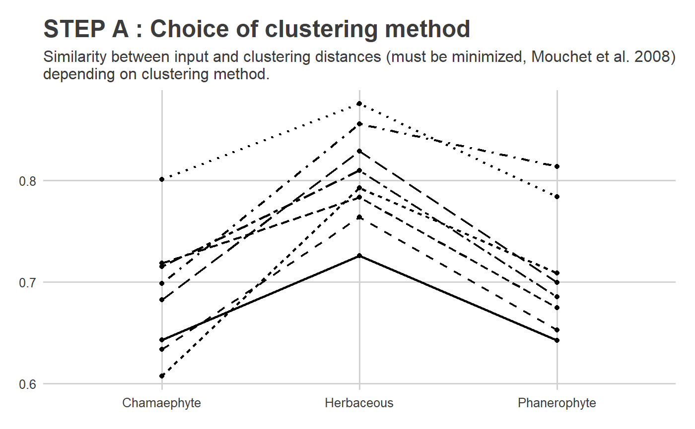
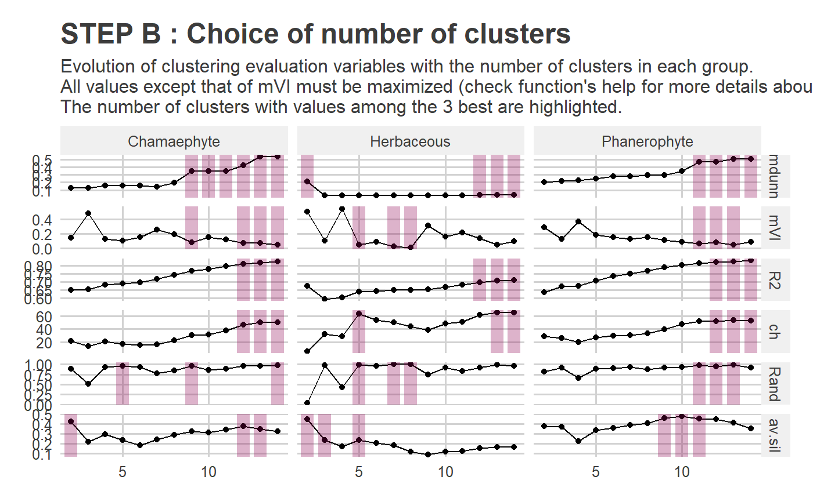

Create clusters based on dissimilarity matrix
Source:R/PRE_FATE.speciesClustering_step1.R
PRE_FATE.speciesClustering_step1.RdThis script is designed to create clusters of species based on a distance matrix between those species. Several metrics are computed to evaluate these clusters and a graphic is produced to help the user to choose the best number of clusters..
PRE_FATE.speciesClustering_step1(mat.species.DIST)
Arguments
| mat.species.DIST | a |
|---|
Value
A list containing one list, one data.frame with
the following columns, and two ggplot2 objects :
a list with as many objects of
class hclust as data subsets
name of data subset number of clusters used for the clustering evaluation metrics' name value of evaluation metric
GROUPno.clustersvariablevalue
ggplot2 object, representing the different
values of metrics to choose the clustering method
ggplot2 object, representing the different
values of metrics to choose the number of clusters
One PRE_FATE_CLUSTERING_STEP1_numberOfClusters.pdf file is created
containing two types of graphics :
to account for the chosen clustering method
for decision support, to help the user to choose
the adequate number of clusters to be given to the
PRE_FATE.speciesClustering_step2 function
Details
This function allows to obtain dendrograms based on a dissimilarity distance matrix between species.
As for the PRE_FATE.speciesDistance method, clustering can be
run for data subsets, conditioning that mat.species.DIST is given as
a list of dist objects (instead of a dist object alone).
The process is as follows :
optimal
clustering method
hierarchical clustering on the dissimilarity matrix is realized with the
hclust.
Several methods are available for the agglomeration : complete, ward.D, ward.D2, single, average (UPGMA), mcquitty (WPGMA), median (WPGMC) and centroid (UPGMC).
Mouchet et al. (2008) proposed a similarity measure between the input distance and the one obtained with the clustering which must be minimized to help finding the best clustering method : $$ 1 - cor( \text{mat.species.DIST}, \text{clustering.DIST} ) ^ 2$$
.pdf output file). clustering
once the hierarchical
clustering is done, the number of clusters to keep should be chosen.
To do that, several metrics are computed :
Dunn index (
mdunn) : ratio of the smallest distance between observations not in the same cluster to the largest intra-cluster distance. Value between0and \(\infty\), and should be maximized.Meila's Variation of Information index (
mVI) : measures the amount of information lost and gained in changing between two clusterings. Should be minimized.Coefficient of determination (
R2) : value between0and1. Should be maximized.Calinski and Harabasz index (
ch) : the higher the value, the "better" is the solution.Corrected rand index (
Rand) : measures the similarity between two data clusterings. Value between0and1, with0indicating that the two data clusters do not agree on any pair of points and1indicating that the data clusters are exactly the same.Average silhouette width (
av.sil) : Observations with a larges(i)(almost1) are very well clustered, a smalls(i)(around0) means that the observation lies between two clusters, and observations with a negatives(i)are probably placed in the wrong cluster. Should be maximized.
.pdf output file).
Mouchet M., Guilhaumon f., Villeger S., Mason N.W.H., Tomasini J.A. &
Mouillot D., 2008. Towards a consensus for calculating dendrogam-based
functional diversity indices. Oikos, 117, 794-800.
Note
The function does not return ONE dendrogram (or as many as
given dissimilarity structures) but a LIST with all tested numbers
of clusters. One final dendrogram can then be obtained using this result
as a parameter in the PRE_FATE.speciesClustering_step2
function.
See also
Examples
## Load example data data(DATASET_Bauges_PFG) ## Species dissimilarity distance (niche overlap + traits distance) tab.dist = DATASET_Bauges_PFG$dom.dist_total str(tab.dist)#> List of 3 #> $ Chamaephyte : 'dist' num [1:378] 0.1622 0.1631 0.0573 0.0825 0.0576 ... #> ..- attr(*, "Labels")= chr [1:28] "X10559" "X10896" "X11038" "X11102" ... #> ..- attr(*, "Size")= int 28 #> ..- attr(*, "call")= language as.dist.default(m = mat) #> ..- attr(*, "Diag")= logi FALSE #> ..- attr(*, "Upper")= logi FALSE #> $ Herbaceous : 'dist' num [1:20706] 0.2503 0.1533 0.0506 0.4386 0.2402 ... #> ..- attr(*, "Labels")= chr [1:204] "X10113" "X10130" "X10328" "X10502" ... #> ..- attr(*, "Size")= int 204 #> ..- attr(*, "call")= language as.dist.default(m = mat) #> ..- attr(*, "Diag")= logi FALSE #> ..- attr(*, "Upper")= logi FALSE #> $ Phanerophyte: 'dist' num [1:435] 0.0134 0.1695 0.1444 0.1293 0.3155 ... #> ..- attr(*, "Labels")= chr [1:30] "X10512" "X10889" "X11057" "X11313" ... #> ..- attr(*, "Size")= int 30 #> ..- attr(*, "call")= language as.dist.default(m = mat) #> ..- attr(*, "Diag")= logi FALSE #> ..- attr(*, "Upper")= logi FALSE#> X10559 X10896 X11038 X11102 X11135 #> X10559 0.00000000 0.1622210 0.1630688 0.05731085 0.08254469 #> X10896 0.16222096 0.0000000 0.3117108 0.10101087 0.19808341 #> X11038 0.16306879 0.3117108 0.0000000 0.12611516 0.15693438 #> X11102 0.05731085 0.1010109 0.1261152 0.00000000 0.08286085 #> X11135 0.08254469 0.1980834 0.1569344 0.08286085 0.00000000## Build dendrograms ------------------------------------------------------------------------- sp.CLUST = PRE_FATE.speciesClustering_step1(mat.species.DIST = tab.dist)#> #> #> #------------------------------------------------------------# #> # PRE_FATE.speciesClustering_step1 #> #------------------------------------------------------------##> #> Clustering method : average #> Clustering evaluation...#> #> > Done!names(sp.CLUST)#> [1] "clust.dendrograms" "clust.evaluation" "plot.clustMethod" #> [4] "plot.clustNo"if (FALSE) { require(foreach) require(ggplot2) require(ggdendro) pp = foreach(x = names(sp.CLUST$clust.dendrograms)) %do% { hc = sp.CLUST$clust.dendrograms[[x]] pp = ggdendrogram(hc, rotate = TRUE) + labs(title = paste0("Hierarchical clustering based on species distance " , ifelse(length(names(sp.CLUST$clust.dendrograms)) > 1 , paste0("(group ", x, ")") , ""))) return(pp) } plot(pp[[1]]) plot(pp[[2]]) plot(pp[[3]]) } str(sp.CLUST$clust.evaluation)#> 'data.frame': 234 obs. of 4 variables: #> $ GROUP : chr "Chamaephyte" "Chamaephyte" "Chamaephyte" "Chamaephyte" ... #> $ no.clusters: int 2 3 4 5 6 7 8 9 10 11 ... #> $ variable : Factor w/ 6 levels "mdunn","mVI",..: 1 1 1 1 1 1 1 1 1 1 ... #> $ value : num 0.129 0.13 0.158 0.158 0.158 ...